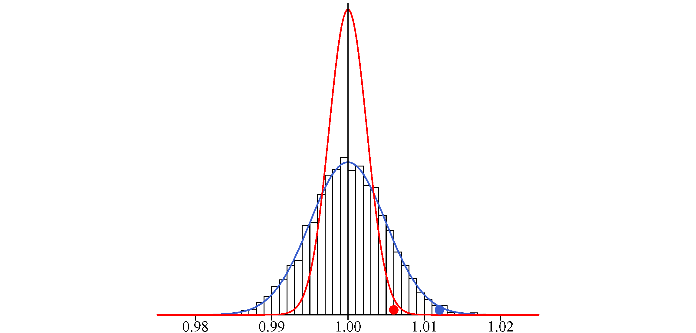
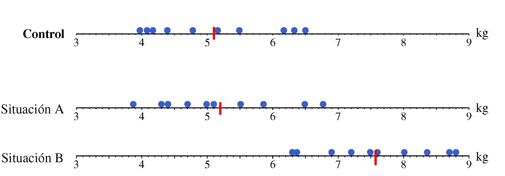
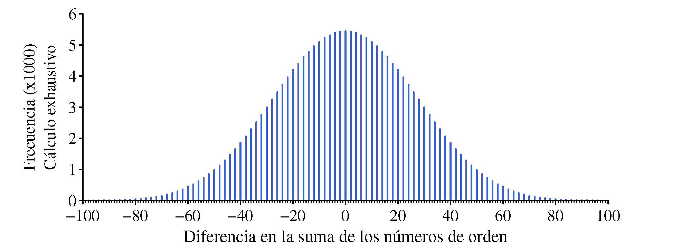
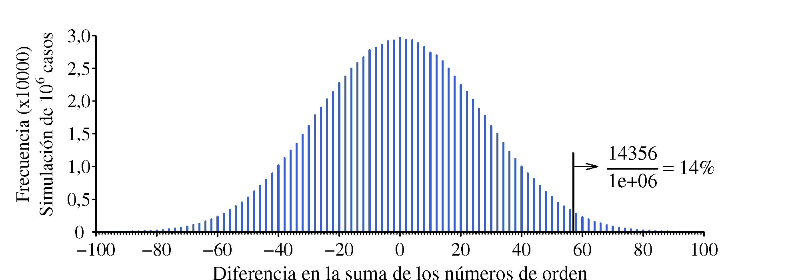
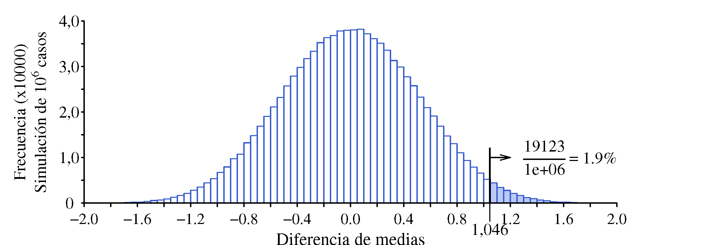

8 Contraste de hipótesis
Los test estadísticos se basan en un esquema de razonamiento llamado contraste de hipótesis. Consiste en plantear una hipótesis conservadora (hipótesis nula), por ejemplo: <“os resultados en el grupo tratado con el nuevo fármaco no son mejores que los del grupo tratado con un placebo”. Frente a ella, se plantea una hipótesis alternativa, que corresponde a lo que asumimos si los datos –la evidencia empírica– están en contradicción con la hipótesis inicial. Entendemos que existe contradicción cuando, de ser cierta la hipótesis conservadora, resultaría muy poco probable obtener unos datos como los observados.
Típicamente, este análisis consiste en realizar ciertos cálculos con los datos para obtener un número que luego se compara con los que aparecen en una tabla para llegar a lo que llamamos “\(p\)-valor”, una especie de número mágico que indica la decisión que se debe tomar. Ese \(p\)-valor también se puede obtener directamente mediante un programa informático, pero tanto si se calcula a mano o con ordenador, con frecuencia no se llega a comprender la lógica que hay detrás del proceso seguido.
En este capítulo, de una forma quizá un poco heterodoxa, vamos a ver en qué consiste esto del contraste de hipótesis.
8.1 Empezamos con un reto: Los dados de Wolf
Rudolf Wolf (1816-1893) fue un astrónomo suizo conocido por sus investigaciones sobre las manchas solares. También tenía interés –los científicos de la época solían tener una amplia gama de intereses– en el cálculo de probabilidades. Algunas fuentes1 indican que, para verificar el cumplimiento de las leyes del cálculo de probabilidades, lanzó 20;!000 veces un par de dados –uno blanco y otro rojo– obteniendo los resultados que se muestran en la Figura 8.1.

Vamos a fijarnos en los resultados obtenidos con cada dado de forma independiente. No esperamos que todos los resultados aparezcan el mismo número de veces; sabemos que si, por ejemplo, lanzamos 60 veces un dado, no necesariamente va a salir 10 veces cada uno de los resultados posibles, sino que existirá una cierta variabilidad en torno a ese 10, que es el valor teórico esperado. De la misma forma, en nuestro caso, el número de veces que saldrá cada valor estará en torno a \(3\;\!333.33\) (\(=20\;\!000/6\)). Sin embargo, al observar los totales que aparecen en la tabla, podría dar la impresión de que la variabilidad es demasiado grande.
El reto que nos planteamos es responder a la pregunta: ¿podemos afirmar que esos dados no estaban bien equilibrados?
Consideramos que los dados están equilibrados, a menos que los resultados obtenidos al lanzarlos contradigan esa suposición. Desde una perspectiva puramente matemática, es seguro que un dado real no está perfectamente equilibrado —no todos los resultados tienen exactamente la misma probabilidad de ocurrir–, pero nosotros nos situamos en el terreno de la práctica, no de los modelos teóricos.
Suponemos que el proceso de lanzamiento de los dados es correcto y que la anotación de los resultados se ha realizado sin errores. Seguramente esto es fácil si se realizan unos pocos lanzamientos, pero si se realizan \(20\;\!000\) ya no lo es tanto. En cualquier caso, si los resultados no son los esperados, vamos a atribuir esa desviación a los dados y no al proceso de lanzamiento.
8.1.1 Representación gráfica de los datos
Aunque en este caso tenemos pocos datos, siempre es una buena idea representarlos gráficamente (Figura 8.2).

Vemos que los valores 3 y 4 –especialmente el 4– aparecen claramente menos de lo previsto en ambos dados. También destaca el valor 6 del dado blanco, que aparece bastante más. El quid de la cuestión está en dilucidar si esas diferencias son fruto del azar y, por tanto, perfectamente normales o si es muy poco probable que se den por casualidad, en cuyo caso sería más razonable considerar que los dados no están equilibrados.
Aunque pueda parecer innecesario, una adecuada representación gráfica de los datos siempre ayuda a ver más claramente la información que contienen, y permiten detectar patrones o anomalías que podrían pasar desapercibidos en una tabla.
Unos opinarán una cosa y otros otra, pero ya sabemos que no necesariamente tendrá razón el que defienda su punto de vista con más vehemencia. Lo que nos interesa son argumentos –seguramente usando el lenguaje de la probabilidad– que sean convincentes. Vamos a ver como encontrar esos argumentos.
Medida de discrepancia entre resultados teóricos y observados
La Tabla 8.1 resume los valores obtenidos con cada dado y su diferencia con el valor teórico (\(=3\;\!333\)) en valor absoluto.
| Resultados | |||||||
| 1 | 2 | 3 | 4 | 5 | 6 | ||
| Dado Blanco |
Valor obtenido | 3.246 | 3.449 | 2.897 | 2.841 | 3.635 | 3.932 |
| Discrepancia | 87 | 116 | 436 | 492 | 302 | 599 | |
| |Obtenido - Teórico| | |||||||
| Dado Rojo |
Valor obtenido | 3.407 | 3.631 | 3.176 | 2.916 | 3.448 | 3.422 |
| Discrepancia | 74 | 298 | 157 | 417 | 115 | 89 | |
| |Obtenido - Teórico| | |||||||
Suma de las discrepancias en valor absoluto. En el caso del dado rojo tendremos: \(74+298+157+417+115+89 = 1\;\!150\). Es necesario realizar la suma de los valores absolutos porque si mantenemos los signos siempre dará igual a cero.
Suma de los cuadrados de las discrepancias. Elevar al cuadrado el valor de la discrepancia es otra forma de evitar que los valores positivos y negativos se anulen entre sí..
La discrepancia máxima. No hay que hacer cálculos. Para el dado rojo es 417 y para el blanco 599.
Cualquiera nos valdría, y también podemos pensar en otras que requieren más cálculos. Vamos a optar por la más sencilla: la discrepancia máxima. A esta medida le llamamos estadístico de prueba.
¿Qué valor cabe esperar del estadístico de prueba?
La discrepancia máxima es una variable aleatoria. Si lanzamos \(20\;\!000\) veces un dado perfectamente equilibrado, obtendremos un valor de esa discrepancia, pero si repetimos el experimento realizando otros \(20\;\!000\) lanzamientos, el valor será otro.
No vamos a repetir el experimento poniéndonos a lanzar dados, podemos simular los resultados que se obtendrían utilizando una hoja de cálculo como la que se muestra en la Figura 8.3. En la primera columna colocamos los resultados obtenidos al lanzar \(20\;\!000\) veces un dado =aleatorio.entre(1;6). En la segunda tenemos la frecuencia de cada uno de los valores que pueden salir =CONTAR.SI(A$2:A$20001;1). En la tercera columna calculamos la diferencia –en valor absoluto– entre la frecuencia observada y la esperada [para 1: =ABS(3333-B2). Finalmente, en la cuarta columna, determinamos el valor máximo de la discrepancia =MAX(C2:C7).

Para repetir la simulación y obtener otro valor de la discrepancia máxima, basta con pulsar F9 si se usa Excel o Ctr+R en Google Sheets. Podemos ir anotando los valores que van saliendo2. La Tabla 8.2 contiene los resultados obtenidos en tres simulaciones destacando en negrita el valor de la discrepancia máxima en cada caso.
| Simulación 1 | ||
| Res. | Frec. | Discrep. |
| 1 | 3362 | 29 |
| 2 | 3318 | 15 |
| 3 | 3326 | 7 |
| 4 | 3368 | 35 |
| 5 | 3302 | 31 |
| 6 | 3324 | 9 |
| Simulación 2 | ||
| Res. | Frec. | Discrep. |
| 1 | 3335 | 2 |
| 2 | 3388 | 55 |
| 3 | 3230 | 103 |
| 4 | 3316 | 17 |
| 5 | 3394 | 61 |
| 6 | 3337 | 4 |
| Simulación 3 | ||
| Res. | Frec. | Discrep. |
| 1 | 3340 | 7 |
| 2 | 3329 | 4 |
| 3 | 3393 | 60 |
| 4 | 3374 | 41 |
| 5 | 3273 | 60 |
| 6 | 3291 | 42 |
Pero lo más efectivo es realizar un pequeño programa que repita este proceso muchas veces guardando cada vez el valor de la discrepancia máxima. La Figura 8.1 muestra la distribución de los \(100\;\!000\) valores obtenidos al repetir la simulación ese número de veces. Valores como 65, 120 o 97 son perfectamente normales. Si la discrepancia máxima obtenida en el experimento realizado por Wolf fuera de ese orden de magnitud no habría nada que decir sobre la calidad del dado. Si hubiera salido del orden de 200 diríamos que es muy poco probable que la discrepancia tenga un valor tan grande, no sería un valor imposible pero sí tan poco probable que lo más razonable sería considerar que el dado no está equilibrado.
“La rareza” de un resultado lo medimos por la probabilidad de tener un valor como ese o mayor . La Tabla 8.3 muestra la proporción de veces (que asimilamos a la probabilidad) que la discrepancia máxima da un valor igual o mayor a los indicados.
| Valor | Proporción de veces que es superado |
| 138 | 0,04879 |
| 164 | 0,01013 |
| 165 | 0,00961 |
| 198 | 0,00089 |
Podríamos haber fijado un valor frontera –ligado a la probabilidad de ser superado– y considerar que los dados están desequilibrados si nuestro resultado supera ese valor. De cualquier forma, en nuestro caso la discrepancia está tan claramente alejada de los valores ``normales’’ que –suponiendo que el proceso de lanzamiento era correcto– podemos asegurar que los dados no estaban equilibrados. Sin ninguna duda. (Figura 8.4)

¿Cómo hemos razonado?
Podemos resumir el proceso seguido en los siguientes pasos:
De entrada hemos supuesto que los dados estaban equilibrados ya que entendemos que eso es lo normal. La carga de la prueba la tienen los que afirman algo singular, especial, excepcional. En este caso que los dados no estaban equilibrados.
En la jerga estadística, a la hipótesis que se supone cierta a no ser que las evidencias –los datos– estén en contradicción con ella, se denomina hipótesis nula, \(\text{H}_0\). A lo que ocurre si se rechaza la hipótesis nula se denomina hipótesis alternativa, \(\text{H}_1\).
A partir de los datos hemos calculado un valor relevante respecto al tema en discusión, en nuestro caso una medida de la discrepancia entre la frecuencia observada y la frecuencia esperada (le podríamos llamar “teóricamente esperada”). A este valor que, de alguna manera, refleja la discrepancia de los datos con la hipótesis nula le llamamos estadístico de prueba.
Hemos construido la distribución a la que debe pertenecer el estadístico de prueba si la hipótesis nula es cierta. A esta distribución le llamamos distribución de referencia.
Nos preguntamos si es razonable considerar que el estadístico de prueba pertenece a la distribución de referencia. Un forma de hacerlo es calcular la probabilidad de que en la distribución de referencia se dé un valor como el del estadístico de prueba o mayor. A esa probabilidad se le denomina \(p\)-valor. Si el \(p\)-valor es muy pequeño consideramos que los datos no son coherentes con la hipótesis nula y nos quedamos con la alternativa.
Vamos a seguir con otros ejemplos porque hay más aspectos que observar en esta forma de razonamiento.
8.2 Paquetes de café: ¿Salen con el peso correcto?
Una máquina automática llena paquetes de café y, cada cierto tiempo se pesa un paquete para verificar que se están llenando con el peso previsto. Si la desviación respecto al objetivo sobrepasa un cierto valor se para la máquina y se reajusta. La pregunta que nos hacemos es: ¿cuál debe ser el valor de la desviación a partir del cual se debe parar y reajustar la máquina?
“Ajustar” la máquina cuando en realidad ya está ajustada, no solo hace perder el tiempo sino que también aumenta la variabilidad final. Si el objetivo es llenar los paquetes con 1000 g, tomamos uno y pesa 1015, este puede ser un valor perfectamente compatible con que la máquina está bien ajustada, siendo la diferencia de 15 g debida a la variabilidad intrínseca del proceso de llenado. Sin embargo, si ignoramos esa variabilidad y entendemos esa desviación como una señal de que los paquetes se están llenando con 15 g de más, intentaremos “corregirla” centrándolo en 15 g menos y el resultado será que lo centraremos en 985 g. A continuación seguramente ocurrirá que tomaremos otro paquete y pesará 980 g con lo que subiremos 20 g el peso medio centrándolo en 1005 g. Así, lo que se irá haciendo es ir moviendo la “campana” de la distribución de los pesos y acabaremos teniendo mayor variabilidad que si no hubiéramos tocado nada (Figura 8.5).

Si a la salida de la máquina todos los paquetes pesaran exactamente lo mismo sería muy fácil saber si se ha producido un desajuste. Pero la realidad no es así, siempre hay variabilidad. Por eso hay que echar mano de la estadística para tomar una decisión.
Necesitamos aplicar un criterio que tenga en cuenta la variabilidad natural del peso de los paquetes. No será un criterio infalible; podrá ocurrir que el proceso se desajuste y, en una primera observación, no seamos capaces de detectarlo o que, por el contrario, consideremos que se ha desajustado cuando en realidad no lo está. No obstante, con la estadística podremos calcular los riesgos de que estos errores ocurran y veremos también cómo podemos reducirlos.
A partir del peso de un solo paquete
Para saber si el peso de un paquete está dentro de lo esperado es necesario conocer cómo se distribuyen los pesos cuando todo funciona correctamente.
Vamos a suponer que tenemos muchos datos históricos. Podemos construir un histograma con esos datos y sobre la misma escala situar el valor obtenido. Pueden darse situaciones como las que se muestran en la Figura 8.6.

Las conclusiones en cada caso serán:
Situación 1: Es muy poco probable que el peso de un paquete sea tan bajo si se están llenando en torno al valor objetivo. Entre los \(5\;\!000\) valores con que se ha construido el histograma, no hay ninguno igual o inferior al que hemos obtenido. Lo más razonable es parar y revisar la máquina.
Situación 2: Es poco probable que el peso de un paquete sea tan bajo. Entre los \(5\;\!000\) valores históricos solo hay 35 con un peso igual o inferior. Lo más razonable también es parar y revisar la máquina.
Situación 3: Un peso como el obtenido es perfectamente normal cuando los paquetes se están llenando de forma correcta. No hay ninguna razón para parar la máquina.
Si en la variabilidad del peso influyen muchas pequeñas causas y son igualmente probables las desviaciones por exceso que por defecto, esa variabilidad seguirá el patrón de la distribución Normal. En nuestro caso también lo podemos confirmar por la forma que tiene el histograma.
A partir de los datos históricos se pueden estimar la media y la desviación típica, que resultan ser: \(\mu = 1000\) y \(\sigma = 5\). Como tenemos muchos datos, casi no habrá diferencia entre los valores estimados y los reales.
Utilizando esa distribución Normal como distribución de referencia y dado el peso de un paquete, \(X\), podemos calcular la probabilidad de tener un valor como ese o más alejado del objetivo. En las situaciones que hemos comentado tenemos:
Situación 1: \(P(X < 976) = 8 \cdot 10^{-7}\): Probabilidad muy pequeña. Es necesario ajustar la máquina.
Situación 2: \(P(X < 988) = 0.0082\). Es muy poco probable tener ese valor si la máquina está bien ajustada. Lo más razonable es considerar que no lo está.
Situación 3: \(P(X < 995) = 0.16\): No hay ninguna razón para considerar que no está bien ajustada.

Vamos a repasar el razonamiento realizado en este caso, que será el mismo que en el ejemplo anterior, insistiendo en los conceptos que ya hemos visto e introduciendo alguno nuevo.
De entrada suponemos que la máquina se mantiene ajustada (hipótesis nula). Eso es lo normal. Solo consideraremos que se ha desajustado (hipótesis alternativa) si los datos disponibles (“el dato” en este caso) están en contradicción con ese supuesto.
Tomamos un valor (estadístico de prueba) que servirá para valorar el desajuste. En general hay que calcularlo a partir de los datos disponibles, pero en este caso es el mismo dato, tal cual. Sabemos como se distribuye ese valor cuando la hipótesis nula es cierta.
Calculamos la probabilidad (\(p\)-valor) de que si todo marcha bien se dé una distancia como la observada –o mayor– respecto al valor objetivo. Si esa probabilidad es pequeña se rechaza la hipótesis nula y nos quedamos con la alternativa.
Para automatizar la toma de decisiones, podemos fijar un valor frontera para el \(p\)-valor. Por ejemplo, si \(p\)-valor \(\leq\) 0,05 se rechaza la hipótesis nula. Esta probabilidad que fijamos como frontera entre lo “raro” y lo “normal” se llama nivel de significación y al valor de la variable que corresponde a esa probabilidad le llamamos valor crítico.
Porque cuando se construyeron las primeras tablas estadísticas, con medios de cálculo rudimentarios, se eligieron valores críticos para probabilidades que eran números redondos en nuestro sistema decimal: 0,5 %, 1 %, 5 %, 10 %. Si tuviéramos 4 dedos en cada mano, seguramente la frontera se hubiera puesto en el 4 %
Observe que, si la hipótesis nula es cierta, existe una probabilidad igual al nivel de significación de que sea “injustamente” rechazada (Figura 8.10, parte superior). Por esta razón en algunos contextos se le llama probabilidad de falsa alarma o de falso positivo; o, de una manera más general pero también más críptica: probabilidad de error tipo I. Lo bueno de todo esto es que nosotros decidimos qué probabilidad de error de este tipo estamos dispuestos a asumir.
También puede ocurrir que el proceso se haya desajustado pero el valor obtenido no llegue a la zona de rechazo (falso negativo o error tipo II). No encontrar evidencias de incumplimiento de la hipótesis nula no significa que se haya demostrado que es cierta.

Es habitual usar la analogía de un juicio para explicar el tipo de razonamiento que realizamos en el contraste de hipótesis. En un juicio, la hipótesis nula es que el acusado es inocente. Solo se le declara culpable si las pruebas o evidencias disponibles contradicen de manera clara la hipótesis de inocencia. Se le considera inocente a menos que se demuestre lo contrario, pero nunca se demuestra que es inocente. Del mismo modo, en estadística nunca demostramos que la hipótesis nula es verdadera; únicamente evaluamos si la evidencia es lo suficientemente fuerte como para rechazarla.
| Tribunal declara al acusado... [lo que decidimos] |
|||
| No culpable | Culpable | ||
| El acusado es: [la realidad] |
Inocente | Decisión correcta | Error tipo I |
| Culpable | Error tipo II | Decisión correcta | |
Si solo estamos interesados en las desviaciones hacia un lado, por ejemplo, solo nos preocupa dar menos peso del anunciado, esa probabilidad de error se concentra en un solo lado de la distribución (una sola cola en el argot habitual). Si nos preocupan las desviaciones tanto por exceso como por defecto debemos repartir el riesgo entre los dos extremos (las dos colas). En este caso también el \(p\)-valor se multiplica por dos para compararlo con el nivel de significación, ya que entendemos que la desviación que observamos hacia un lado también se podría haber dado hacia el otro.
A partir del valor medio de una muestra
No hay que confundir una media con una observación individual. Las medias tienen menos variabilidad y concentran más información que las observaciones individuales, de manera que siempre es preferible decidir en base al valor de una media.
En la Figura 8.9 hemos representado la distribución de los pesos de los paquetes de café con la distribución Normal que mejor se adapta al histograma de los datos históricos (\(\mu = 1\) kg; \(\sigma = 0.005\) kg) con un valor (punto azul) que tiene una probabilidad de 0,008 de ser superado. También hemos representado la distribución que siguen las medias de muestras de \(n=4\) observaciones (\(\mu=1\); \(\sigma = 0.005/\sqrt{4}\)) con un punto rojo “igual de raro” (con la misma probabilidad de ser superado) que la observación individual. El punto rojo aparece como un valor normal en la distribución de las observaciones individuales, pero no lo es en la distribución a la que verdaderamente pertenece.

El valor de una media y el de una observación individual no se distinguen en nada. Son del mismo orden de magnitud y tienen el mismo aspecto y las mismas unidades, pero no son lo mismo. No tienen la misma variabilidad ni pertenecen a la misma distribución. Hay que tener cuidado de no confundirse.
Es mejor decidir en base al valor de una media, no tanto para disminuir la probabilidad de error Tipo I (rechazar la hipótesis nula cuando en realidad es cierta) que siempre podemos fijar en el valor que nos interesa, sino para –una vez fijada esa probabilidad– disminuir la probabilidad de error Tipo II, es decir, de no rechazar la hipótesis nula cuando es falsa.
En la Figura 8.10 tenemos la distribución de los valores individuales y la correspondiente a las medias de 4 observaciones. En ambas distribuciones podemos fijar el valor que tiene una probabilidad de 0,05 de ser sobrepasado (hacia los valores bajos en nuestro caso).
Los valores críticos se han calculado haciendo:
Observación individual:
\(z_{0.05} = \dfrac{x-\mu}{\sigma} \rightarrow 1.645 = \dfrac{x-1}{0.005} \rightarrow x = 0.9918\)
Media de 4 observaciones:
\(z_{0.05} = \dfrac{\bar{x}_4 - \mu}{\sigma/\sqrt{n}} \rightarrow 1.645 = \dfrac{\bar{x}_4-1}{0.005/\sqrt{4}} \rightarrow \bar{x}_4 = 0.9959\)
De manera que si un paquete pesa menos de 0,9918 g o la media de 4 no llega a 0,9959, con una probabilidad de error de 0,05 consideraremos que se están llenando los paquetes con menos peso del que es debido (\(\mu\) < 1).
Esa probabilidad de error (error tipo I) es la misma tanto si se controlan observaciones individuales como medias, pero si el proceso se descentra y pasa a llenar los paquetes con 0,990 kg la probabilidad de que no nos enteremos al tomar una unidad individual es: \[P(X > 0.9918 \; | \; \mu=0.99; \sigma = 0.005) = 0.36 \] Mientras que si controlamos medias de 4 observaciones, tenemos: \[P(X > 0.9959 \; | \; \mu=0.99; \sigma = 0.0025) = 0.009 \]
Nuevo enfoque en base a los valores de una muestra
Una forma sencilla de hacernos una idea de como van las cosas es considerar que si los paquetes se están llenando en torno al valor objetivo, aproximadamente la mitad tendrán un peso por encima y la otra mitad por debajo. Si el proceso está centrado en 1000 g, tomar 10 paquetes y que todos tengan un peso por debajo de 1000 es un suceso tan raro como lanzar 10 veces una moneda al aire y que las 10 veces salga cara. La Tabla 8.5 muestra las probabilidades asociadas al número de caras que se pueden obtener cuando se realizan 10 y 20 lanzamientos (aplicación directa de la distribución binomial).
| 10 lanzamientos | ||
| Num. caras |
Prob. individual |
Prob. acumulada |
| 0 | 0,001 | 0,001 |
| 1 | 0,010 | 0,011 |
| 2 | 0,044 | 0,055 |
| 3 | 0,117 | 0,172 |
| 4 | 0,205 | 0,377 |
| 5 | 0,246 | 0,623 |
| 6 | 0,205 | 0,828 |
| 7 | 0,117 | 0,945 |
| 8 | 0,044 | 0,989 |
| 9 | 0,010 | 0,999 |
| 10 | 0,001 | 1,000 |
| 10 lanzamientos | ||
| Num. caras |
Prob. individual |
Prob. acumulada |
| 0 | 0,000 | 0,000 |
| 1 | 0,000 | 0,000 |
| 2 | 0,000 | 0,000 |
| 3 | 0,001 | 0,001 |
| 4 | 0,005 | 0,006 |
| 5 | 0,015 | 0,021 |
| 6 | 0,037 | 0,058 |
| 7 | 0,074 | 0,132 |
| 8 | 0,120 | 0,252 |
| 9 | 0,160 | 0,412 |
| 10 | 0,176 | 0,588 |
| 11 | 0,160 | 0,748 |
| 12 | 0,120 | 0,868 |
| 13 | 0,074 | 0,942 |
| 14 | 0,037 | 0,979 |
| 15 | 0,015 | 0,994 |
| 16 | 0,005 | 0,999 |
| 17 | 0,001 | 1,000 |
| 18 | 0,000 | 1,000 |
| 19 | 0,000 | 1,000 |
| 20 | 0,000 | 1,000 |
Si lo que nos preocupa es dar menos peso del anunciado, podemos tomar como estadístico de prueba el número de paquetes que tienen un peso por debajo del nominal en una muestra de \(n\), y como distribución de referencia una binomial con parámetros \(n\) (tamaño de muestra) y \(p=0.5\). La hipótesis nula es que el proceso está centrado (es lo normal) y solo la rechazaremos si los datos la contradicen. En este caso no podemos elegir la probabilidad exacta que define la zona de rechazo porque el número de caras es una variable discreta y a cada uno de los valores que puede tomar le corresponde una probabilidad concreta, pero a la vista de los valores que aparecen en la Tabla 8.5 podemos decir que si en una muestra de 10 unidades solo 0 o 1 tienen un peso por encima del valor nominal (probabilidad de equivocarnos –error tipo I– del orden del 1%), seguramente el proceso estará descentrado. Igual si en una muestra de 20 unidades solo tenemos 5 o menos por encima del valor nominal (probabilidad de equivocarnos del orden del 2%).
8.3 ¿Es eficaz un nuevo abono?
Supongamos que nos dedicamos al cultivo de tomates y queremos analizar si el uso de un nuevo fertilizante aumenta la producción de las plantas.
Lo primero –y lo más laborioso y delicado– será planificar cómo se van a obtener los resultados de la cosecha y vigilar que todo el proceso se realice de la forma prevista hasta pesar los tomates. En principio, habrá que utilizar cuantas más plantas mejor3, pero siempre hay limitaciones (de espacio, de tiempo que podemos dedicar,…) y es mejor tener pocos datos recogidos con cuidado que tener muchos que no son fiables. Pongamos que podemos usar 20 plantas y las repartimos en dos grupos de 10. A las de un grupo no le pondremos abono, será el grupo de control, y al otro sí, será el grupo tratado.
Sin ser nosotros agricultores (habría que contar con un asesor que conozca bien todos los aspectos a considerar) habrá que estar seguros de que:
Las 20 plántulas son “idénticas” (indistinguibles) con el mismo origen y las mismas características. La asignación de las plantas a cada grupo se debe realizar aleatoriamente, por ejemplo, escribiendo los números del 1 al 20 en 20 papeletas y asignando al azar una papeleta a cada planta. Las numeradas del 1 al 10 forman un grupo y el resto el otro.
El terreno en que se planten debe ser homogéneo, tanto en relación al tipo de tierra como al de la cantidad de agua y de sol (y otros factores que puedan influir) que recibe cada planta.
El fertilizante que se echa a las plantas del grupo tratado no debe llegar a las del grupo de control. Esto implica una cierta separación entre unas y otras que puede perjudicar la homogeneidad de las condiciones de cultivo.
No haya bichos ni plagas que afecten a algún grupo de plantas. Si así fuera quizá habría que eliminar la producción de alguna planta e incluso podría inutilizar todo el plan de recogida de datos.
Ya han crecido las plantas y hemos recogido y pesado la producción de cada una. Los resultados, en kg, son:
| Control: | 5,16 | 6,17 | 4,17 | 3,97 | 5,49 | 4,08 | 4,39 | 6,50 | 4,78 | 6,33 |
| Tratado: | 7,18 | 4,80 | 7,58 | 6,57 | 5,46 | 5,75 | 6,99 | 4,19 | 6,20 | 6,78 |
“Un estudio estadístico demuestra que un medicamento cura el resfriado en 4 días” ¿hay que recomendarlo? Si sin tomarlo se cura en 3 días no parece un gran avance. La bondad de un nuevo tratamiento –en el ámbito que sea– siempre conviene analizarla comparándolo con el tratamiento habitual (grupo de control).
A estas alturas ya hemos realizado casi todo el trabajo. ¿Ahora qué?
Análisis gráfico de los resultados obtenidos
Antes de ponernos a realizar análisis más sofisticados siempre conviene representar los datos gráficamente, con dos objetivos:
Detectar posibles valores anómalos que quizá conviene descartar, o errores de escritura o de transcripción. Si esos valores nos pasan desapercibidos las conclusiones pueden ser muy distintas y el ridículo mayúsculo.
Tener unas primeras conclusiones, que pueden ser definitivas si son muy claras. En caso de duda un test estadístico cuantifica el nivel de duda y ayudar a tomar una decisión.
En una situación como la que estamos analizando basta con realizar diagramas de puntos como los de la Figura 3.2. La línea roja representa el valor medio de cada grupo.
 {#fig-dotplot .fig-normal6 fig
{#fig-dotplot .fig-normal6 fig
align=“center” width=“100%”}
El gráfico da la sensación de que las plantas con abono (representadas por el grupo tratado) tienen –en promedio– más producción que las no abonadas (representadas por el grupo de control4). La situación estaría mucho más clara si nos encontráramos en una de las situaciones que se muestran en la ?fig-dotplot2. Si los datos del grupo tratado son los que corresponden a la situación A no podremos afirmar que el abono aumenta la cosecha, aunque la media de la producción es ligeramente superior que en el grupo tratado (5,2 frente a 5,1 kg). Por el contrario, si los resultados fueran los representados en la situación B, podríamos afirmar sin temor a equivocarnos que la producción es mayor con abono.

{#fig-dotplot2 .fig-normal6 figalign=“center” width=“100%”}
Volviendo a nuestros resultados, estamos “bastante seguros” de que el abono mejora la cosecha, pero no parece imposible que la diferencia observada se haya dado por casualidad. Si los dos valores del grupo tratado que están por encima de 7 kg estuvieran en torno a 5 kg, la impresión –solo cambiando dos números– sería muy distinta.
En una situación como esta, un test estadístico es útil para ayudarnos a tomar la decisión más adecuada.
Si a la vista de la representación gráfica de los resultados es un caso dudoso, lo seguirá siendo después de realizar un test. El test simplemente cuantifica la duda de forma objetiva y ayuda a tomar una decisión con probabilidad de error conocida.
¿El azar explica la diferencia observada?
Si no hubiera variabilidad aleatoria –si una planta, en igualdad de condiciones, siempre produjera la misma cantidad de tomates–, este problema sería trivial: bastaría con comparar una planta en las condiciones habituales y otra en esas mismas condiciones pero con abono. Si la planta abonada diera mayor cosecha, consideraríamos que el abono es eficaz y asunto resuelto. Pero sabemos que las cosas no son tan simples. Dos plantas que crecen en “igualdad de condiciones” (entre comillas, porque las condiciones nunca son idénticas) no dan exactamente la misma cosecha. Aunque el abono utilizado sea totalmente ineficaz, existe una probabilidad del 50% de que, por simple azar, la planta con abono dé mayor cosecha.
Realizar un test estadístico consiste en analizar si la diferencia observada entre el grupo de control y el grupo tratado puede atribuirse únicamente a la variabilidad aleatoria de los resultados, o si esa diferencia es demasiado grande para explicarse solo por el azar y debe existir algún factor que la provoque. Si el plan de recogida de datos se ha llevado a cabo correctamente, todos los factores que podrían influir en el resultado habrán afectado por igual a ambos grupos, salvo el que queremos evaluar. En ese caso, lo razonable es atribuir la diferencia a ese factor, que en nuestro caso es el uso de abono.
Vamos a seguir el procedimiento habitual del contraste de hipótesis.
Hipótesis nula frente a hipótesis alternativa
La hipótesis nula será que el abono no es eficaz, es decir, que no aumenta la cosecha. La carga de la prueba la tiene el que afirma que sí afecta y esa será la alternativa. A efectos de tomar la decisión de utilizar el abono no importa si no aumenta la producción o si la disminuye. No hay peligro de que decidamos usar abono cuando su influencia es negativa. El riesgo lo concentramos en la posibilidad de considerar que el abono es eficaz cuando en realidad no lo es (error tipo I).
Estadístico de prueba
Existen varias opciones, vamos a usar una fácil de entender y que no tiene ningún misterio. Colocamos los pesos de las 20 plantas ordenados de menor a mayor y sumamos los números de orden de los que corresponden a cada tratamiento tal como se realiza en la Tabla 7.1. Si los valores del grupo tratado tienden a ser mayores que los del grupo de control, estos aparecerán al final de la lista y la suma de sus números de orden será mayor que la correspondiente al grupo de control. Por el contrario, si tanto el grupo de control como el tratado dan pesos similares sus valores aparecerán entremezclados en la lista ordenada y en ambos casos la suma de sus números de orden será similar.
Por tanto, la diferencia en la suma de los números de orden (vamos a llamarle \(\Delta\)) es una medida de la diferencia de pesos entre el grupo de control y el grupo tratado. Su valor máximo se da cuando todos los valores de un grupo aparecen primero y, a continuación, vienen los del otro grupo. En ese caso tenemos \(\Delta_{max} = 20+19+18+ \cdots +11 - (10 +9+ \cdots +1) = 155-55 = 100\). En nuestro caso: \(\Delta = 134-76 = 58\).
| Número de orden |
Peso | Tratamiento | Número de orden Grupo Control |
Número de orden Grupo tratado |
| 1 | 3,97 | Control | 1 | |
| 2 | 4,08 | Control | 2 | |
| 3 | 4,17 | Control | 3 | |
| 4 | 4,19 | Tratado | 4 | |
| 5 | 4,39 | Control | 5 | |
| 6 | 4,78 | Control | 6 | |
| 7 | 4,80 | Tratado | 7 | |
| 8 | 5,16 | Control | 8 | |
| 9 | 5,46 | Tratado | 9 | |
| 10 | 5,49 | Control | 10 | |
| 11 | 5,75 | Tratado | 11 | |
| 12 | 6,17 | Control | 12 | |
| 13 | 6,20 | Tratado | 13 | |
| 14 | 6,33 | Control | 14 | |
| 15 | 6,50 | Control | 15 | |
| 16 | 6,57 | Tratado | 16 | |
| 17 | 6,78 | Tratado | 17 | |
| 18 | 6,99 | Tratado | 18 | |
| 19 | 7,18 | Tratado | 19 | |
| 20 | 7,58 | Tratado | 20 | |
| Suma de los números de orden: | 76 | 134 | ||
Distribución de referencia
Se trata de ver qué distribución sigue el valor de \(\Delta\) cuando no hay diferencia entre tratamientos. Si se tienen 10 observaciones en cada grupo el número de ordenaciones posibles (permutaciones) de todo el conjunto es igual a \(20!\). Sin embargo, dada una ordenación global, las reordenaciones dentro de un mismo tratamiento no cambian el valor del estadístico de prueba por lo que el número de ordenaciones total habrá que dividirlo por el número de ordenaciones dentro de cada grupo.
En nuestro ejemplo, la distribución de referencia estará compuesta por \(\frac{20!}{10! \cdot 10!} = 184\;\!756\) valores que se pueden obtener mediante un programa que plantee todos los casos y determine el valor de \(\Delta\) para cada uno de ellos. Si el programa se realiza con el paquete de software estadístico R o con Python existen librerías que realizan las permutaciones y facilitan mucho la tarea5. El aspecto de la distribución de referencia calculada de esta forma es el que se muestra en la Figura 8.11.

Cálculo del \(p\)-valor
Es posible que, sin haber diferencia entre los dos tratamientos, una vez ordenados los resultados resulte que los del grupo de control ocupen las posiciones del 1 al 10 y los del tratado del 11 al 20, obteniendo \(\Delta = 100\). Este es un valor posible pero la probabilidad de que esto ocurra por azar es \(1/184\;\!756\), tan baja que lo más razonable es suponer que existe diferencia en el nivel de respuesta de ambos tratamientos. La probabilidad de tener, por ejemplo, \(\Delta \geq 80\) es igual a \(139/184\;\!756 = 0,075\%\), también un valor muy bajo.
Con los datos de nuestro ejemplo tenemos \(\Delta = 58\) y \(P(\Delta \geq 58) = 2\;\!661 /184\;\!756 = 1.44\%\)
La distribución de referencia también se puede construir calculando los valores de \(\Delta\) que corresponden a asignaciones al azar de 10 valores a cada grupo. La distribución que aparece en la Figura 8.12 –prácticamente igual a la que habíamos obtenido anteriormente– se ha realizado de esta forma calculando el valor de \(\Delta\) un millón de veces. Valores iguales a nuestro estadístico de prueba \(\Delta = 58\) o mayores se han obtenido \(14\;\!356\) veces por lo que el \(p\)-valor es igual a \(14\;\!356 / 1\;\!000\;\!000 = 1.44\%\), igual que con la distribución en que se han calculado todos sus valores de forma exhaustiva.

El test estadístico no dice qué decisión hay que tomar, solo informa sobre la probabilidad de que una diferencia como la observada sea debida al azar. Cómo se valora esa probabilidad depende de qué riesgos se está dispuesto a asumir.
Otro estadístico de prueba con su distribución de referencia
Usando como estadístico de prueba la diferencia entre las medias de los dos grupos. Tenemos:
| Grupo de control: | $$\bar{y}_C = 5,104$$ |
| Grupo tratado: | $$\bar{y}_T = 6,150$$ |
| Estadístico de prueba: | $$\bar{y}_T - \bar{y}_C = 6,150$$ |
Considerar que el abono no afecta es lo mismo que suponer que la única diferencia entre ambos grupos es la etiqueta que se les pone. Bajo esta hipótesis, la diferencia de medias observada en nuestro caso será simplemente una de las muchas que se pueden obtener asignando a 10 resultados tomados al azar la etiqueta que los identifica como pertenecientes al grupo de control, y a los otros 10 la etiqueta del grupo tratado.
En la tabla \(\ref{testPermuta}\) tenemos cinco posibles asignaciones de etiquetas (C: Control, T: Tratado) con el valor de la diferencia de medias obtenido en cada caso.
| Peso | Tratamiento (etiqueta) | ||||
| Cinco posibles permutaciones | |||||
| 1 | 2 | 3 | 4 | 5 | |
| 3,97 | T | C | T | T | T |
| 4,08 | C | T | C | C | T |
| 4,17 | C | C | T | T | C |
| 4,19 | C | C | T | C | T |
| 4,39 | T | C | T | C | C |
| 4,78 | T | C | C | T | T |
| 4,80 | C | C | T | T | T |
| 5,16 | T | T | C | T | C |
| 5,46 | C | T | C | T | C |
| 5,49 | T | T | C | T | T |
| 5,75 | C | T | T | C | C |
| 6,17 | C | T | T | C | C |
| 6,20 | T | T | C | C | C |
| 6,33 | T | C | T | C | C |
| 6,50 | T | C | C | C | T |
| 6,57 | C | T | T | T | T |
| 6,78 | T | T | C | T | T |
| 6,99 | C | T | C | C | T |
| 7,18 | T | C | T | T | C |
| 7,58 | C | C | C | C | C |
| $$\bar{y}_C$$ | 5,576 | 5,389 | 5,902 | 5,818 | 5,839 |
| $$\bar{y}_T$$ | 5,678 | 5,865 | 5,352 | 5,436 | 5,415 |
| $$\bar{y}_T - \bar{y}_C$$ | 0,102 | 0,476 | -0,550 | -0,382 | -0,424 |
La distribución de referencia estará formada por el conjunto de todas las diferencias que se pueden obtener de esta forma, que como en el caso anterior es igual a \(\frac{20!}{10! \cdot 10!}\) (permutaciones de 20 elementos con 10 y 10 repetidos). También en este caso los valores de la distribución de referencia hay que obtenerlos mediante un pequeño programa que calcule la diferencia de medias para cada una de las ordenaciones posibles de forma exhaustiva, o bien calcularla para una gran cantidad de ordenaciones tomadas al azar.
La figura \(\ref{distRefPermu}\) se ha construido con valores obtenidos generando un millón de ordenaciones al azar. Han aparecido \(194\;\!123\) valores6 mayores o iguales al estadístico de prueba (1,046). El \(p\)-valor resultante es en este caso del 1,9 %.

El \(p\)-valor que ahora hemos obtenido no es idéntico al anterior, no todos los test que es razonable realizar dan exactamente el mismo resultado, pero sí es similar y conduce a las mismas conclusiones.
8.4 ¿Es más probable llegar a futbolista profesional si se ha nacido en los primeros meses del año?
Se dice que los nacidos en los primeros meses del año tienen más opciones de llegar a ser futbolistas profesionales que los nacidos más tarde7. Se argumenta por el hecho de que las categorías infantiles se organizan por año de nacimiento, y a los 8 o 10 años casi un año de diferencia se nota mucho. Los nacidos a principios de año son los mayores del grupo, suelen ser más fuertes y tener más experiencia, lo que les permite destacar. Esto alimenta su confianza y sus ganas de convertirse en grandes jugadores, algo que no suele pasar con los más pequeños, que, en comparación, rinden menos. Además, los ojeadores tienden a fijarse más en los mayores —los que sobresalen— y les ofrecen jugar en equipos de mayor nivel, mientras que es más difícil que eso ocurra con los más pequeños.
En la temporada 2021-2022, de los 516 jugadores en las plantillas de la Primera División española, 308 (el 59,7%) habían nacido en la primera mitad del año y el resto en la segunda8. ¿Avalan estos datos la teoría de que nacer en la primera mitad del año aumenta las posibilidades de llegar a profesional?
En principio, no es evidente si esa diferencia puede ser atribuida al azar, ya que no esperamos que exactamente la mitad de los jugadores haya nacido en la primera mitad del año; de la misma forma que no esperamos que, al lanzar 100 veces una moneda al aire, aparezcan exactamente 50 caras y 50 cruces.
Si de los 516 tuviéramos que 260 (el 50,4 %) hubieran nacido en la primera mitad del año y 256 en la segunda, estaría claro que los datos no avalan la teoría planteada, mientras que si tuviéramos 482 (el 93,4 %) nacidos en los primeros meses y solo 26 en los últimos diríamos que claramente los nacidos en la primera mitad del año tienen más posibilidades de llegar a profesionales, ¿qué podemos decir con nuestros datos?
Una vez más, vamos a seguir el proceso de razonamiento del contraste de hipótesis.
1. Hipótesis nula frente a alternativa
En este caso la hipótesis nula es que la probabilidad de que un futbolista profesional haya nacido en la primera mitad del año es del 50 %. Esto es lo que –en principio– sería normal. La carga de la prueba la tienen los que afirman que esa probabilidad es mayor.
2. Estadístico de prueba
No hay muchas opciones donde elegir. Usaremos el número de futbolistas que en los datos disponibles han nacido en la primera mitad del año. Otra opción, que en el fondo es la misma, sería la proporción de los que han nacido en ese periodo.
3. Distribución de referencia
Será la distribución del número de nacidos en la primera mitad del año de un total de 516 personas, suponiendo que la probabilidad de nacer en esa primera mitad es del 50 %. Esta es la que corresponde a una variable aleatoria con distribución binomial y parámetros: \(n=516\) y \(p=0.5\).
4. Cálculo del \(p\)-valor
Se trata de analizar si nuestro valor (308) es normal en la distribución de referencia. Vemos (figura \(\ref{distRefFutbol}\)) que queda prácticamente fuera de la distribución y podemos calcular que la probabilidad de tener un valor como ese o mayor es del orden de 6 entre 1 millón. Por tanto, el estadístico de prueba no parece formar parte de la distribución a que debería pertenecer si la hipótesis nula fuese cierta. Lo más razonable es rechazar la hipótesis nula y considerar que el azar no explica ese desequilibrio en el número de nacimientos en la primera y segunda mitad del año.
Nosotros descubrimos estos datos en el libro de M. G. Bulner: Principles of Statistics, Ed. Dover, 1979. La publicación original que se cita (Czuber, 1903) puede consultarse aquí, pág. 118).↩︎
Tal como se ha hecho en el Apéndice 7.B para simular el proceso de estimación del número de taxis que hay en una ciudad.↩︎
Veremos que se puede calcular el número de plantas necesario suponiendo una cierta variabilidad en los resultados y de acuerdo con unas probabilidades de error tipo I y tipo II previamente fijadas.↩︎
Los datos que tenemos son solo los representantes de los grupos de interés, que son las producciones “en general” de las plantas con y sin abono.↩︎
Nosotros hemos usado la librería iterpc para R. Observe que basta calcular la suma \(S\) correspondiente a los números de orden de un tratamiento ya que: \(\Delta = 2S-210\)↩︎
En otra simulación este número no sería idéntico pero sí muy similar.↩︎
Una detallada explicación de este fenómeno centrada en Canadá y en el hockey sobre hielo se encuentra en el libro de Malcolm Gladwell: “Outliers. The Story of Success”, capítulo 1: “The Matthew Effect” (2008). Existe traducción al español con el título: “Fuera de serie: Por qué unas personas tienen éxito y otras no”.↩︎
Datos obtenidos en https://www.transfermarkt.es.↩︎